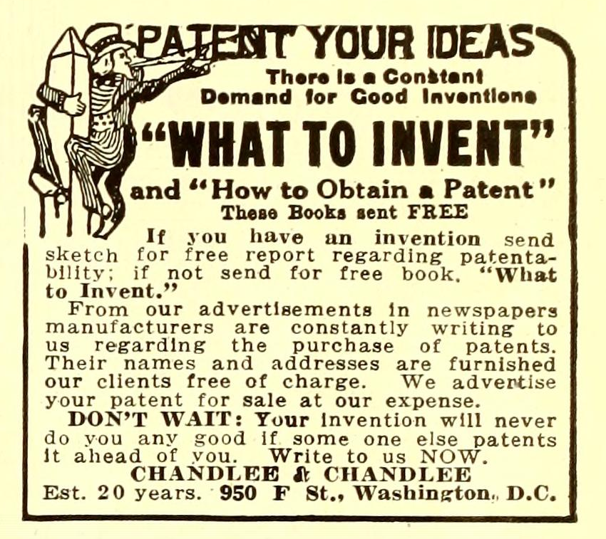
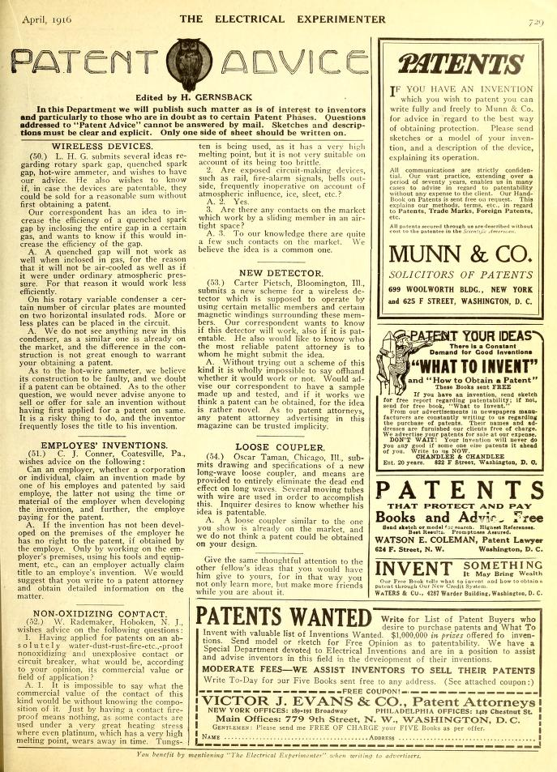

What to Invent
*The Electrical Experimenter*, vol. 4 no. 1 , May 1916
DRAFT: Please do not share without permission of the author. Typeset versions in web | pdf | doc

OF late, we are receiving a great many inquiries from experimenters, would-be inventors, inventors, as well as others, asking us to publish a “list” of useful electrical devices which as yet require to be invented.1 Most of our correspondents state that they are of an inventive turn of mind and quite a few admit very frankly that in the past they have lost a good deal of money and time in trying to develop ideas which afterwards turned out to be of no earthy practical use. By boiling down the various inquiries, this is what our correspondents desire: “What electrical inventions are urgently required at present, and which ones are the most desirable from a financial viewpoint?”
As most everyone is familiar with the important problems as yet unsolved, such as: Electricity direct from Coal; Harnessing of the Sun’s and the Ocean’s Energy; Cold Light, etc., we do not for the present wish to dwell upon these. For that reason the “list” which we suggest below will probably be more in keeping with our would-be inventors’ desires. We make no claim that the suggestions are highly original, or that they could not easily be improved upon. We do, however, think that it would be quite profitable to invent and market any one of the ideas and devices cited. At least that is our humble opinion.
Wire Insulation. At present we use either cotton, silk, rubber, or enamel to cover wires. There is needed a covering, having all the good qualities of silk and cotton as well as enamel, but none of their bad ones, i.e., the insulation must take up a minimum of space, it must be tough and must not crack or break.
Storage Battery Casings. 98% of all portable storage batteries are now encased in wood. Wood is cheap and if well impregnated it is fairly acid proof for a limited time. As a whole the material, however, is not satisfactory. There must be something better. What is it?
Heavy Current Microphone. Wireless telephony is retarded at present because there is no practical transmitter that can handle from 5 to 10 amperes continuously. The microphone should be small and should not requirewater cooling, as this makes it highly undesirable. Preferably no carbon should enter into its construction.

Marble Substitute. There is an immense demand for instrument bases and parts, switch and switchboard bases, etc. At present very expensive marble, slate, wood or composition is used. Porcelain is cheap, but never presents a good appearance, especially for instrument bases. Marble dust is cheap and can be readily had in large quantities. Who will be the first to mold a real cheap marble base, that take a good polish? We are aware of the fact that artificial marble is in existence. It is, however, almost as expensive as the natural.2
Telephone Muffler. A device is needed whereby you can talk into your telephone transmitter in such a manner that a person sitting close by cannot hear what you say. Every business office, for obvious reasons, can use such an attachment. At the present time the business man must use a cumbersome, as well as expensive telephone booth. There have been telephone mufflers on the market in the past, but all died a quick death; there was just one trouble with them; they didn’t muffle!
Tele-Music. An “industry” rivaling the moving picture busienss can be created when some genius perfects a means supplying telephone subscribers with all kinds of music from a brass band down to a violin concert. The requisites are that ten or 100,000 subscribers can listen in, all at the same time, without the sound weakening as more telephone lines are put in the circuit. The subscriber must be able to use his regulation instrument. No expensive attachments should be used; only, perhaps, let us say, a low priced horn, quickly attachable to the telephone receiver. The music should be heard loudly all over the room. No expensive nor complicated plant should be used at the point where the music originates. A two-wire line should connect the plant with “central.”
These are only a very few suggestions. If required we will publish more from time to time.
-
Once he transitioned to publishing fiction magazines exclusively, Gernsback would transition to soliciting “plots” from his readers instead of inventions. In the November 1929 issue of Science Wonder Stories for instance, he offers a prize of $150 in gold for story treatments: “…the more interesting, the more exciting, and the more scientifically probable you can make it, the better. Remember, anyone can participate in this contest” (485). ↩
-
Bakelite, patented in 1909, was an early form of plastic that would soon become the standard for radios, especially mass produced sets. ↩
Grant Wythoff, editor
grant.wythoff@gmail.com

This work is licensed under a Creative Commons Attribution-NonCommercial-NoDerivatives 4.0 International License.